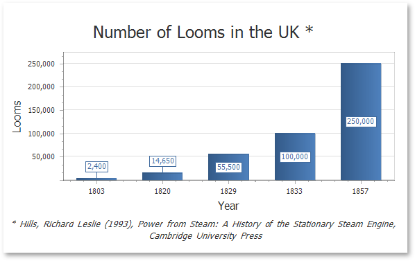
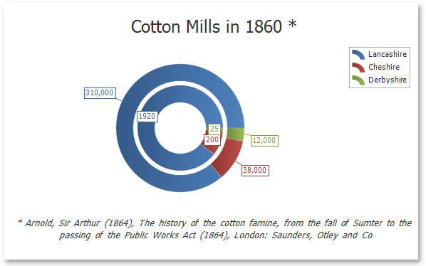

Use Charts in Reports
Overview
You can use the Chart control to add a chart to a report. This control provides 2D or 3D views to visualize data series (for instance, Bar, Point, Line, Pie and Doughnut, Area, etc.).
| 2D Series View | 3D Series View |
|---|---|
|  |  |
The Chart control can display multiple series.
| Bar and Point Series | Nested Doughnut Series |
|---|---|
 |
 |
The Chart control contains various visual elements (diagrams, series, legends, primary and secondary axes, titles and labels, etc.). You can select these elements in the Report Designer and customize their settings in the Property Grid.
The Report Designer provides the Chart Designer that allows you to create and customize charts.
Bind to Data
To provide data to a chart, use the Data Source property.
You can assign a Pivot Grid to a chart's data source. This allows the Pivot Grid to supply data to the chart. Refer to the Link a Chart and a Pivot Grid topic for details.
When the chart data source is not assigned, the chart obtains data from the report's data source
A chart can display report data in the following ways:
Place a chart on the report header/footer band to display a summary for the detail report data.
Place a chart on a group header/footer to visualize data in each report group. Refer to the Use Charts to Visualize Grouped Data step-by-step tutorial for more information.
The chart in the Detail band is printed as many times as there are records in the report's data source.
Specify the following settings to provide data to a chart's series.
- The Argument Data Member property specifies the data field that provides point arguments.
- The Value Data Members property specifies the data fields that supply point values.
You can specify these settings in the following ways:
Bind each series individually
Add a new series to the chart and specify the argument and value data members. Refer to the Add a Chart (Set Up Series Manually) step-by-step tutorial for details.
Create series dynamically
Assign the data field that contains series names to the chart's Series Data Member property and specify the argument and value data members using the series template. Refer to the Add a Chart (Use a Series Template) step-by-step tutorial for more information.